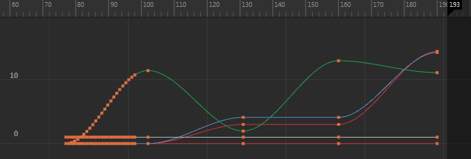

在曲线图编辑器(Graph Editor)中，单击  ，或选择“编辑 > 变换工具 > 重定时工具”(Edit > Transformation Tools > Retime Tool)启用“重定时工具”(Retime Tool)。
，或选择“编辑 > 变换工具 > 重定时工具”(Edit > Transformation Tools > Retime Tool)启用“重定时工具”(Retime Tool)。

使用“重定时工具”(Retime Tool)可以使您可以直接调整动画序列中关键帧移动的计时。请参见重定时动画。
对于在具有多个 Autodesk 应用程序的流程中工作的动画师，类似的动画重定时工具可在 3ds Max、Softimage 和 MotionBuilder 中使用。
- 若要退出“重定时工具”(Retime Tool)，请选择任何其他工具。
- 您可以自定义“重定时工具”(Retime Tool)操纵器颜色设置(Color Settings)窗口的颜色。
重定时设置(Retime Settings)
选择“编辑 > 变换工具 > 重定时工具”(Edit > Transformation Tools > Retime Tool) >  （或双击工具箱(Tool Box)区域中的“重定时工具”(Retime Tool)图标 ），打开以下“重定时设置”(Retime Settings)。
（或双击工具箱(Tool Box)区域中的“重定时工具”(Retime Tool)图标 ），打开以下“重定时设置”(Retime Settings)。
注： “重定时设置”(Retime Settings)显示在“工具设置”(Tool Settings)窗口中，位于“曲线图编辑器”(Graph Editor)之外。
- 捕捉帧上的标记(Snap Markers on Frame)
- 启用该选项后，重定时标记会随拖动捕捉到图表视图区域中的整个帧。禁用该选项后，可以在帧之间拖放标记。（请参见使重定时标记捕捉到帧。）